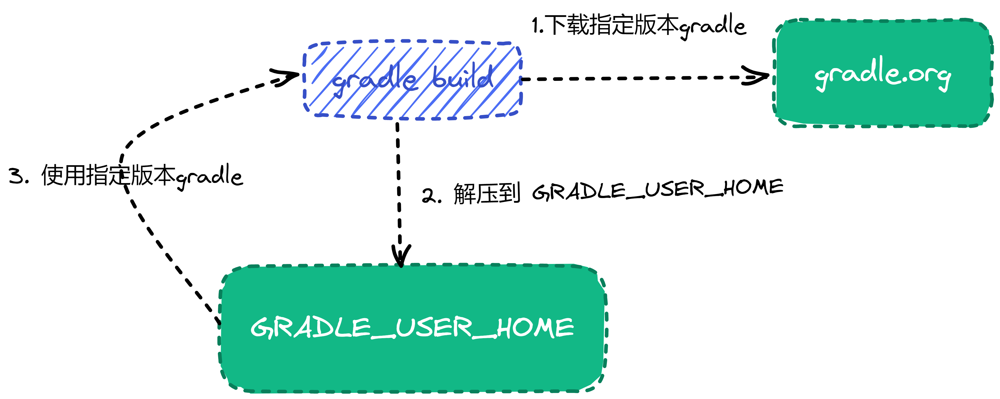

7. 初始化
7.1 创建项目文件目录¶
Gradle 内置一个 init 任务 ，它在一个空文件夹中初始化一个新的 Gradle 项目。 Init 任务 使用(也是内置的) wrapper 任务 创建 Gradle wrapper 脚本 - gradlew 文件。
-
创建新项目文件夹
tendata-jstart；mkdir tendata-jstart -
进入 新项目文件夹；
cd tendata-jstart
7.2 运行 gradle 初始化任务¶
- 在新项目目录中，在终端中使用以下命令运行 init 任务:
gradle init，根据提示选择相应的选项。 由于gradle init 初始化的源码目录结构和现有目录结构 不相匹配，选择 项目类型时，选择1-basic类型即可；构建脚本选择groovy;其他选择默认即可。
输出如下：
$ gradle init
Starting a Gradle Daemon (subsequent builds will be faster)
Select type of project to generate:
1: basic
2: application
3: library
4: Gradle plugin
Enter selection (default: basic) [1..4] 1
Select build script DSL:
1: Groovy
2: Kotlin
Enter selection (default: Groovy) [1..2] 1
Generate build using new APIs and behavior (some features may change in the next minor release)? (default: no) [yes, no]
Project name (default: tendata-jstart):
> Task :init
Get more help with your project: Learn more about Gradle by exploring our samples at https://docs.gradle.org/7.4.2/samples
BUILD SUCCESSFUL in 4m 26s
2 actionable tasks: 2 executed
init 任务输出如下项目结构
.
├── .gitattributes
├── .gitignore # (1)
├── .gradle
├── build.gradle # (2)
├── gradle # (3)
│ └── wrapper
│ ├── gradle-wrapper.jar
│ └── gradle-wrapper.properties
├── gradlew # (4)
├── gradlew.bat
└── settings.gradle # (5)
3 directories, 8 files
- git 提交忽略 配置文件；
- 项目构建文件；
- gradle wrapper 文件包；
- gradle wrapper 脚本文件,
windows使用gradlew.bat文件 ； - gradle 定义生成名称和子项目的配置文件；
7.2.1 settings.gradle¶
settings.gradle 主要包含两个方面的作用:
- 设置顶层项目名称，使用
rootProject.name； - 组织子项目模块， 使用
include方法；
常见的属性配置有:
rootProject.name = 'demo'
include('app1')
include('app2')
app1, app2 两个功能模块： rootProject.name- 为构建分配一个名称，这将覆盖以其所在目录命名构建的默认行为。建议设置一个固定的名称，因为如果项目是共享的，那么文件夹可能会发生变化——例如作为 Git 存储库的根目录include: 定义一个子项目模块 例如app1包含在顶层项目中；
7.2.2 build.gradle¶
build.gradle 作为项目的构建脚本，定义了项目的构建，运行环境，包依赖，以及打包规则等。相较以前的maven，ant 构建来说，依托于 灵活的 groovy 脚本语言和强大的插件功能，使得gradle 在项目构建方面更加灵活，但是也提高开发人员的学习门槛。
常见的配置如下：
apply plugin: 'java' // (1)
apply plugin: 'eclipse'
apply plugin: 'application'
mainClassName = 'hello.HelloWorld' // (2)
repositories { // (3)
mavenCentral()
}
jar { // (4)
archiveBaseName = 'gs-gradle'
archiveVersion = '0.1.0'
}
sourceCompatibility = 1.8 //(5)
targetCompatibility = 1.8
dependencies { // (6)
implementation "joda-time:joda-time:2.2"
testImplementation "junit:junit:4.12"
}
- 使用 插件；
- 项目入口类；
- 依赖库仓库源；
- 打包方式类型；
- 依赖jdk 版本；
- 依赖库声明；
7.2.3 gradle wrapper 相关¶
在以gradle 作为构建项目的最佳实践中，建议以gradle wrapper 作为构建任何任务的做法。gradle wrapper 脚本会检测 GRADLE_USER_HOME 中 是否包含 项目预先制定的gradle 版本 ，如果没有会下载指定版本的gradle 到 GRADLE_USER_HOME 中。因此开发人员可以快速启动项目，而不需要配置安装复杂的gradle 环境。

gradle-wrapper.jar- 用于运行 wrapper 功能的 api 功能代码 jar 包。gradle-wrapper.properties负责配置 Wrapper 运行时行为的属性文件，例如与此版本兼容的 Gradle 版本，下载地址等gradlew,gradlew.bat用于使用 Wrapper 执行构建的 shell 脚本和 Windows 批处理脚本。
7.2.4 .gitignore¶
gitignore 文件的目的是确保某些未被 Git 跟踪的文件 保持不被Git 跟踪,下次提交的时候不会出现在 git commit 的列表中。
要停止跟踪当前跟踪的文件，请使用 git rm --cached xxx.txt。
常见的 .gitignore 文件参考如下：
HELP.md
.gradle
build/
!gradle/wrapper/gradle-wrapper.jar
!**/src/main/**/build/
!**/src/test/**/build/
### STS ###
.apt_generated
.classpath
.factorypath
.project
.settings
.springBeans
.sts4-cache
bin/
!**/src/main/**/bin/
!**/src/test/**/bin/
### IntelliJ IDEA ###
.idea
*.iws
*.iml
*.ipr
out/
!**/src/main/**/out/
!**/src/test/**/out/
### NetBeans ###
/nbproject/private/
/nbbuild/
/dist/
/nbdist/
/.nb-gradle/
### VS Code ###
.vscode/
7.3 配置¶
7.3.1 创建源码目录结构¶
在项目根目录创建以下目录,或者在 Linux 终端使用 命令 创建 mkdir -p src/main/java src/main/resources src/test/java src/test/resources
src/main/java: java 源码目录；src/main/resources: 项目静态资源配置文件目录；src/test/java: 单元测试源码目录；src/test/resources: 单元测试配置文件目录；
构建后的项目结构如下:
.
├── .gitattributes
├── .gitignore
├── .gradle
├── build.gradle
├── gradle
│ └── wrapper
│ ├── gradle-wrapper.jar
│ └── gradle-wrapper.properties
├── gradlew
├── gradlew.bat
├── settings.gradle
└── src
├── main
│ ├── java # (1)
│ └── resources # (2)
└── test
├── java # (3)
└── resources # (4)
- java 源码目录；
- 项目静态资源配置文件目录；
- 单元测试源码目录；
- 单元测试配置文件目录；
7.3.2 配置构建脚本¶
一般的一个基本的gradle 项目构建包含 插件，依赖配置，依赖配置仓库，打包，任务等组成。如果需要更加复杂的项目构建，可以参考 gradle官方文档.
一个最简单的项目构建脚本如下可以参考 7.2.2 build.gradle 文件 章节
本章节，我们可以根据实际情况更改我们的配置:
- 使用
idea，java,spring-boot等 插件； - 将仓库源设置为
mavenLocal()->aliyun->mavenCentern(); - 添加 spring web 开发依赖包；
最终配置如下:
plugins {
id 'org.springframework.boot' version '2.6.7'
id 'io.spring.dependency-management' version '1.0.11.RELEASE'
id 'java'
}
apply plugin: 'idea'
apply plugin: 'eclipse'
apply plugin: 'java'
apply plugin: 'io.spring.dependency-management'
group = 'cn.tendata.jstart'
version = '0.0.1-SNAPSHOT'
sourceCompatibility = 1.8
targetCompatibility = 1.8
bootJar {
launchScript()
}
repositories {
mavenCentral()
}
dependencies {
}
tasks.named('test') {
useJUnitPlatform()
}
运行 Spring Boot 应用程序除了 java -jar 命令外，boot plugin 还为 Unix 系统制作完全可执行的应用程序。完全可执行的 jar 可以像任何其他可执行二进制文件一样执行，也可以使用或注册init.dsystemd。这使得在常见的生产环境中安装和管理 Spring Boot 应用程序变得非常容易。
对于gradle 配置
bootJar {
launchScript()
}
7.3.3 验证¶
验证初始化环境从以下几个 方法来验证：
- 验证 gradle wrapper H环境是否安装正确:
./gradlew --version
./gradlew.bat --version
显示如下结果，表示安装成功:
------------------------------------------------------------
Gradle 7.4.2
------------------------------------------------------------
Build time: 2022-03-31 15:25:29 UTC
Revision: 540473b8118064efcc264694cbcaa4b677f61041
Kotlin: 1.5.31
Groovy: 3.0.9
Ant: Apache Ant(TM) version 1.10.11 compiled on July 10 2021
JVM: 1.8.0_282 (Eclipse OpenJ9 openj9-0.24.0)
OS: Windows 8.1 6.3 amd64
./gradlew tasks
显示如下结果:
luwei@DESKTOP-TDFJPJJ tendata-jstart .\gradlew.bat tasks
> Task :tasks
------------------------------------------------------------
Tasks runnable from root project 'tendata-jstart'
------------------------------------------------------------
Application tasks
-----------------
bootRun - Runs this project as a Spring Boot application.
Build tasks
-----------
assemble - Assembles the outputs of this project.
bootBuildImage - Builds an OCI image of the application using the output of the bootJar task
bootJar - Assembles an executable jar archive containing the main classes and their dependencies.
bootJarMainClassName - Resolves the name of the application's main class for the bootJar task.
bootRunMainClassName - Resolves the name of the application's main class for the bootRun task.
build - Assembles and tests this project.
buildDependents - Assembles and tests this project and all projects that depend on it.
buildNeeded - Assembles and tests this project and all projects it depends on.
classes - Assembles main classes.
clean - Deletes the build directory.
jar - Assembles a jar archive containing the main classes.
testClasses - Assembles test classes.
Build Setup tasks
-----------------
init - Initializes a new Gradle build.
wrapper - Generates Gradle wrapper files.
Documentation tasks
-------------------
javadoc - Generates Javadoc API documentation for the main source code.
Help tasks
----------
buildEnvironment - Displays all buildscript dependencies declared in root project 'tendata-jstart'.
dependencies - Displays all dependencies declared in root project 'tendata-jstart'.
dependencyInsight - Displays the insight into a specific dependency in root project 'tendata-jstart'.
dependencyManagement - Displays the dependency management declared in root project 'tendata-jstart'.
help - Displays a help message.
javaToolchains - Displays the detected java toolchains.
outgoingVariants - Displays the outgoing variants of root project 'tendata-jstart'.
projects - Displays the sub-projects of root project 'tendata-jstart'.
properties - Displays the properties of root project 'tendata-jstart'.
tasks - Displays the tasks runnable from root project 'tendata-jstart'.
IDE tasks
---------
cleanEclipse - Cleans all Eclipse files.
cleanIdea - Cleans IDEA project files (IML, IPR)
eclipse - Generates all Eclipse files.
idea - Generates IDEA project files (IML, IPR, IWS)
openIdea - Opens the IDEA project
Verification tasks
------------------
check - Runs all checks.
test - Runs the test suite.
Rules
-----
Pattern: clean<TaskName>: Cleans the output files of a task.
Pattern: build<ConfigurationName>: Assembles the artifacts of a configuration.
To see all tasks and more detail, run gradlew tasks --all
To see more detail about a task, run gradlew help --task <task>
BUILD SUCCESSFUL in 2s
1 actionable task: 1 executed